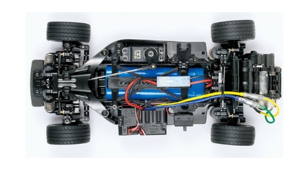

タミヤ M-06

引用元画像:タミヤ公式サイト
📋 基本情報
| メーカー | タミヤ（Tamiya） |
|---|---|
| 機種名 | M-06 |
| 型番 | 58572（VW Beetle）、58668（VW Type 2）など |
| 発売時期 | 2010年 |
| 生産状況 | 生産終了 |
| カテゴリー | ラジコンカー（1/10スケール 電動RCカー） |
| サブカテゴリー | Mシャーシ（コンパクトRR駆動ツーリングカー） |
📏 シャーシスペック
| 全長 | ボディにより異なる（例：Lotus Europa = 390mm） |
|---|---|
| 全幅 | ボディにより異なる（例：Lotus Europa = 176mm） |
| 全高 | ボディにより異なる（例：Lotus Europa = 114mm） |
| ホイールベース | 210mm / 225mm / 239mm（3段階調整可能） |
| トレッド | 前後とも138mm |
| タイヤ幅/径 | 前後とも25mm / 59mm |
| フレーム | バスタブタイプ |
⚙️ 駆動系
| 駆動方式 | リヤモーター・後輪駆動（RR） |
|---|---|
| デフギヤ | 3ベベルデフ |
| ギヤ比 | 5.8:1（標準20Tピニオンギヤ使用時） |
| モーター | 540タイプ |
🔧 サスペンション
| 形式 | 4輪ダブルウィッシュボーン独立懸架 |
|---|---|
| ダンパー | フリクションダンパー（前後） |
| ステアリング | 3分割タイロッド式 |
💡 特徴
RR駆動をMシャーシで実現
- リヤモーター・後輪駆動のRR車の走りをコンパクトなMシャーシで実現
- M-05（FF駆動）の後継機として、RR駆動の楽しさを提供
- 軽量でバランスの良いハンドリング特性
最適化されたレイアウト
- バスタブタイプフレームを採用
- バッテリー縦置き配置で低重心化を実現
- R/C機器を左右に配置し最適なバランスを確保
- 後輪への優れたトラクションと安定性
高い調整性と互換性
- ホイールベース3段階調整可能（210mm / 225mm / 239mm）
- M-05のコンポーネントを流用、多くのパーツに互換性あり
- 60Dラジアルタイヤ（前）＋60Dスーパーグリップラジアルタイヤ（後）を標準装備
- 3分割ステアリングリンケージで俊敏なハンドリングレスポンス
🔧 ぽすとそに工房での修理実績
修理難易度
★★☆☆☆（比較的簡単、パーツ入手に注意）
よくある故障・注意点
- 2010年発売の古いシャーシのため、一部パーツの入手が困難になっている
- M-05との互換パーツが多いため、代替品で対応可能な場合も多い
- ギアボックス周りの摩耗に注意（定期的なメンテナンスが重要）
- フリクションダンパーは消耗品のため定期交換を推奨
修理のポイント
- M-05のパーツとの互換性を活用して修理可能
- バッテリー縦置きレイアウトのため、配線の取り回しに注意
- RR駆動特有のリヤギアボックスへの負荷を考慮したメンテナンスが必要
- 3分割ステアリングリンケージの調整がハンドリングの鍵
その他の特徴
- コンパクトなMシャーシでありながらRR駆動の本格的な走りを楽しめる
- 多彩なボディバリエーション（VW Beetle、VW Type 2、Lotus Europa Specialなど）
- M-06 PROやM-06Rなどのアップグレード版も展開
- 初心者から上級者まで楽しめる汎用性の高さ